Beppu
別府
À bord du ferry "Sunflower" qui relie Osaka à Beppu
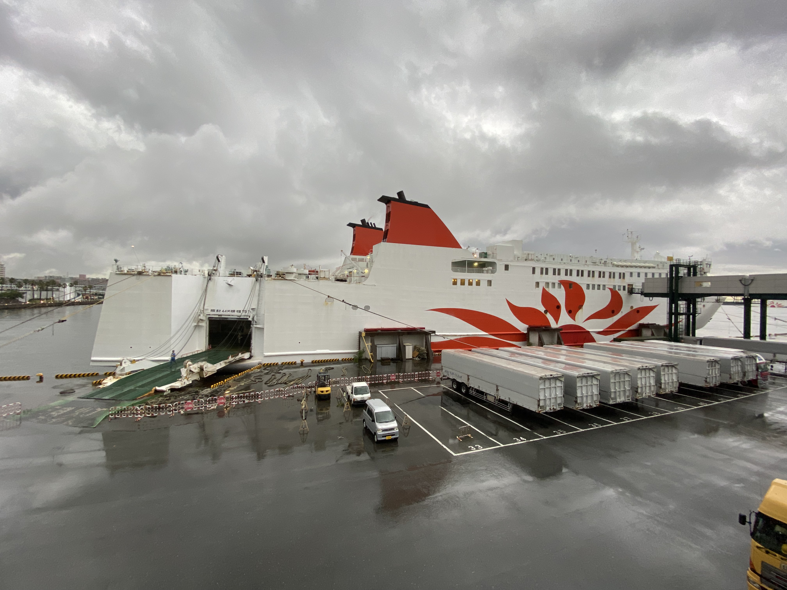
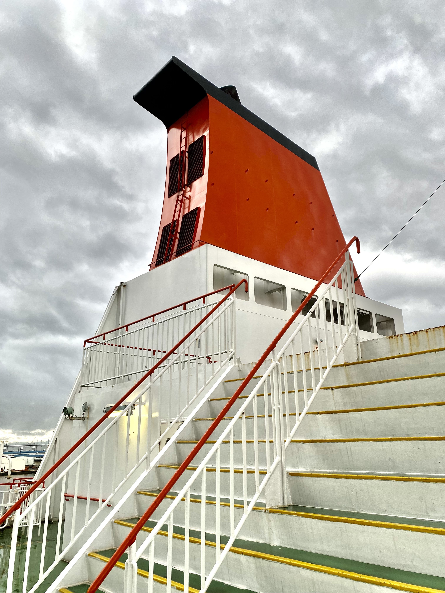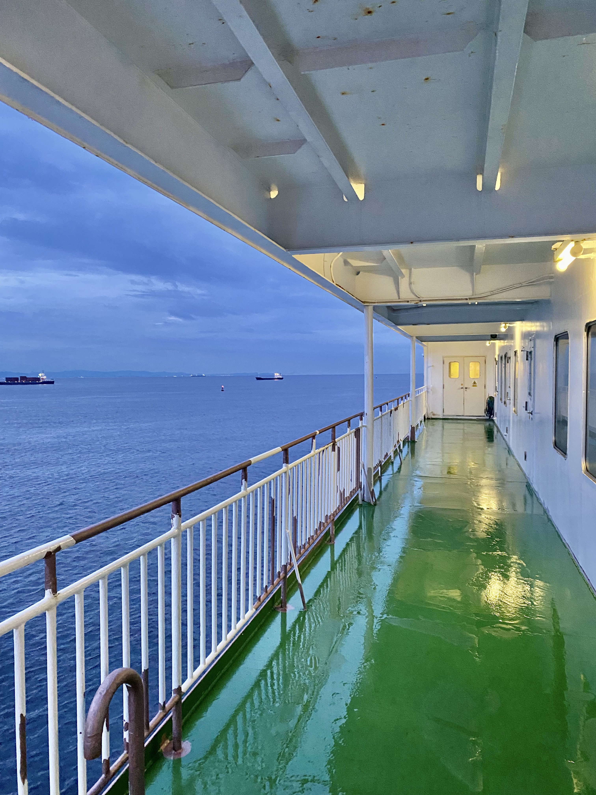
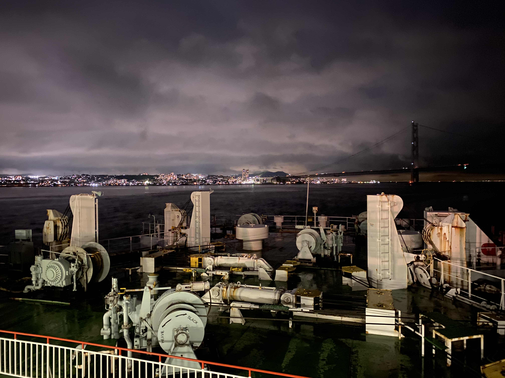
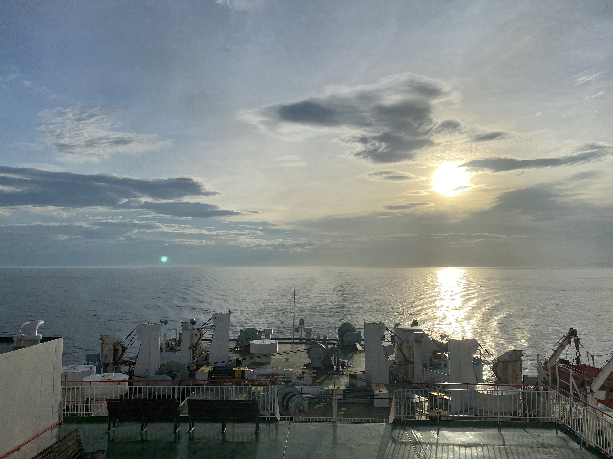
Les enfers de Beppu, sources d'eau à presque 100° qui crachent des panaches de vapeur brûlante et créent des étangs aux couleurs étranges


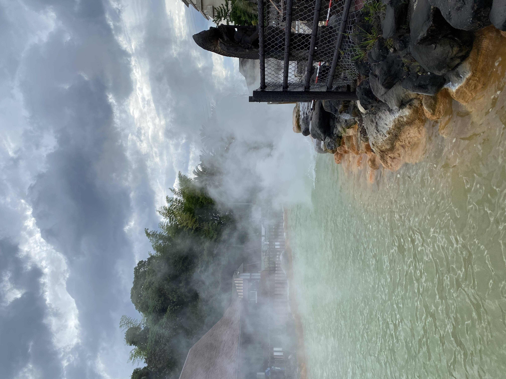


Les "onsentamago", oeufs cuits dans l'eau des enfers
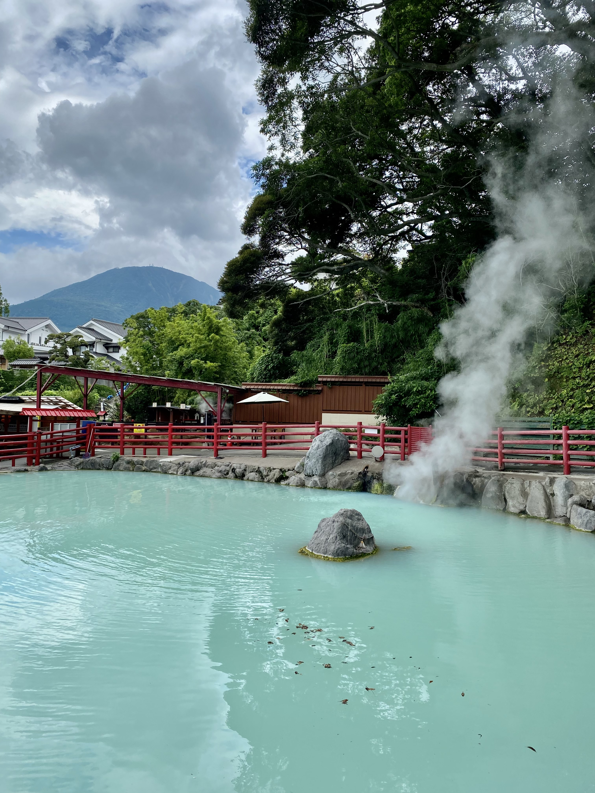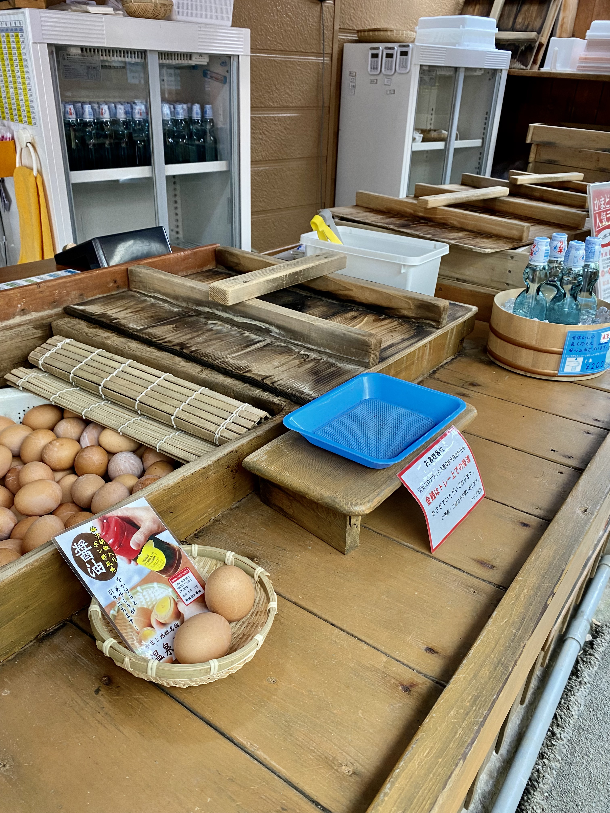
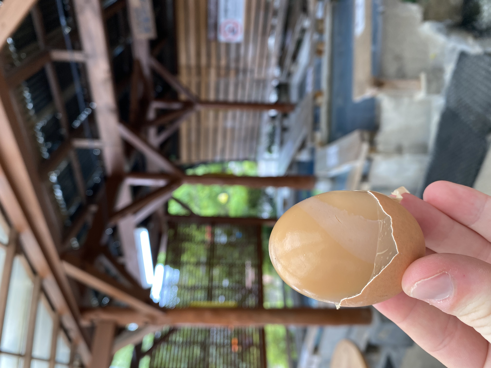
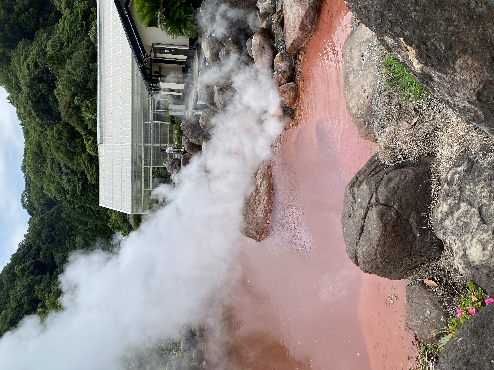
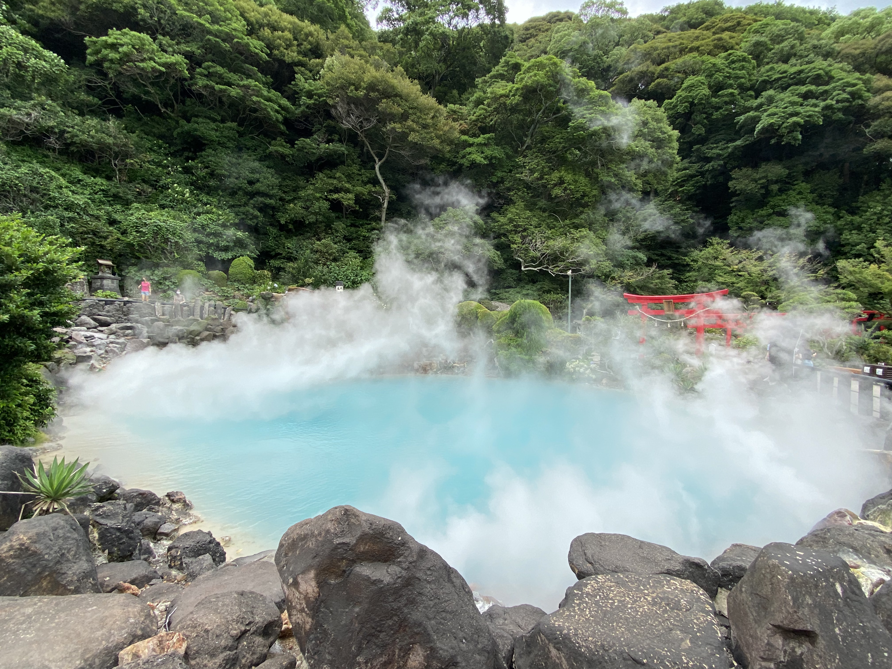
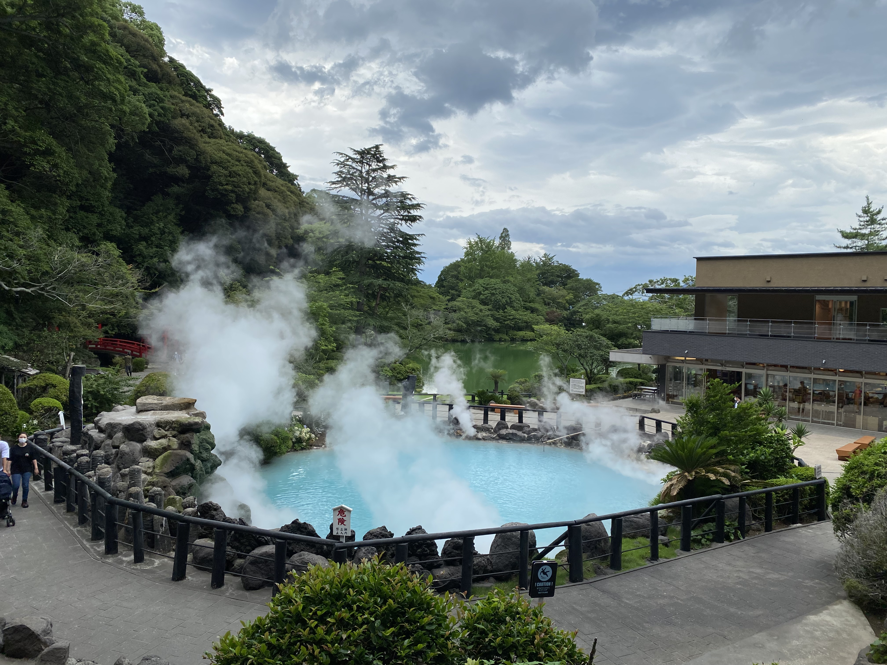
Sur les hauteurs de Beppu
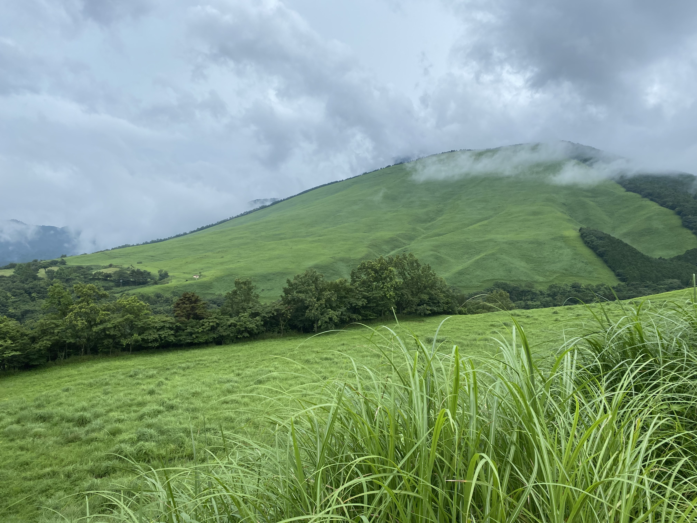

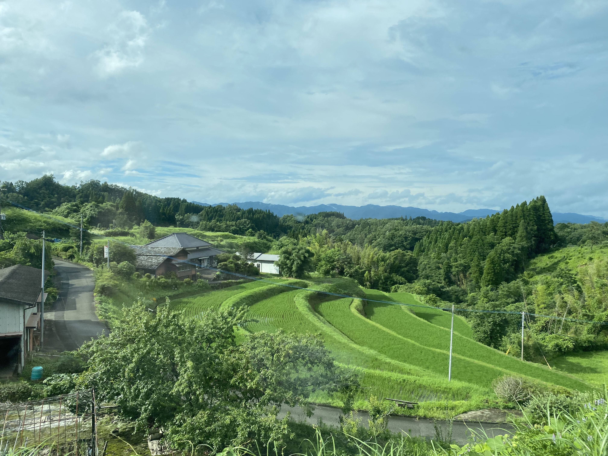